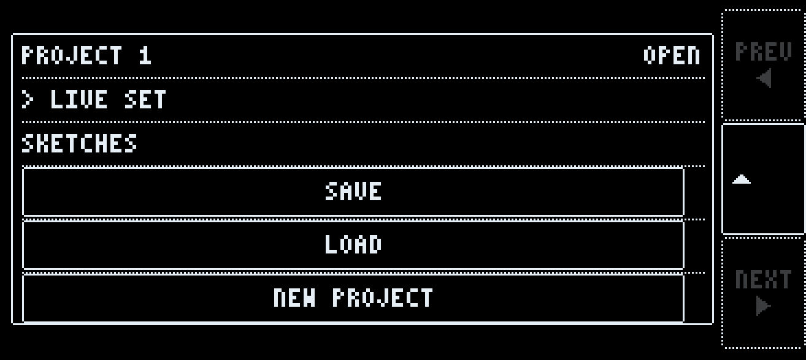

Projects

This is where you save and load your projects. Open it with PROJECT on the setup page.
| Control | What it does |
|---|---|
| The list | Tap a project to select it. OPEN marks the project that is open. |
| SAVE | Saves your work into the selected project. Asks SURE? first. |
| LOAD | Opens the selected project. Unsaved work is lost. Asks SURE? first. |
| NEW | Makes a new project and asks for its name. |
| SHARE | Sends the open project's saved file. |
The app keeps your work as you go, so it opens where you left it without saving.